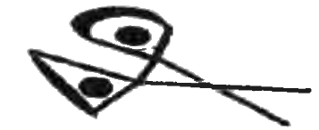
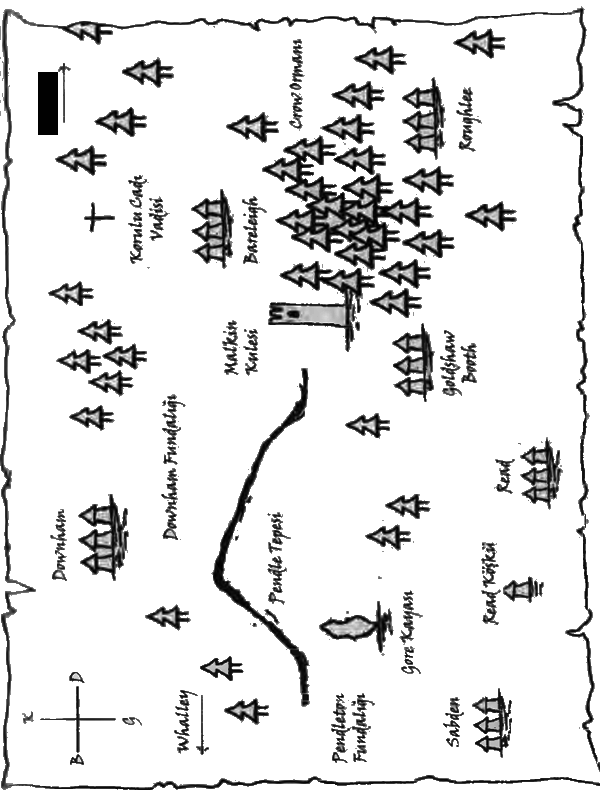

PENDLE'A DOĞRU DOĞUYA
Chipenden'dan doğuya doğru yola koyulduk, bir süre Bowland Tepesi'nin güneyinde kaldıktan sonra uzaklaşıp Ribble Nehri'nin hoş, ağaçlarla çevrili kıyısını geçtik. Bunun Priestown'dan geçen geniş, gel git nehriyle aynı olduğunu tahmin etmemin imkânı yoktu ve ilerlemeye başlayınca gitgide daha gergin hissetmeye başladım.
"İşte orada evlat," dedi Hayalet yolumuzun üzerindeki bir akarsuyun uzağında durarak. Yaklaştıkça irileşen Pendle Tepesi'ni işaret ediyordu. "Pek hoş bir görüntü değil ha?"
Ona hak vermemek elde değildi. Her ne kadar şekli bana Chipenden'ın güneyinde bir vadinin arkasında kalan tepelerden olan Long Bayırı'nı anımsatsa da bu çok daha büyük ve ürkütücüydü. Zirvesinde yoğun ve kopkoyu bir bulut kümesi asılıydı.
"Kimileri onu karaya vurmuş dev bir balinaya benzetir," dedi Hayalet. "Ben hiç balina görmediğimden bunu bilemem. Kimileriyse ters dönmüş bir tekneye benzetir. Biraz benziyor, yine de hakkını veren bir kıyaslama olduğu söylenemez. Sen ne dersin evlat?"
Manzarayı dikkatlice inceledim. Hava kararmaya başlamıştı ama sanki tepenin kendisi de bir tür karanlık saçıyordu. Korkunç bir görüntüsü vardı.
"Neredeyse canlı gibi," dedim kullandığım kelimeleri dikkatlice seçerek. "Sanki içinde kötücül bir şey var da her şeye kötü bir büyü yapıyor."
"Bunu ben bile daha iyi ifade edemezdim evlat," dedi Hayalet düşünceli bir şekilde asasına dayanarak. "Fakat kesin olan bir şey var: Hemen yakınında sürüyle kötücül cadı yaşıyor. Yarım saate kalmaz hava kararacak, yani şafak sökene dek nehrin bu yanında kalmamız daha akıllıca olur. Sonra Pendle'a girebiliriz."
Biz de öyle yapıp çalıların arasına kamp kurduk. Nehirle aramızda yarım tarlalık bir mesafe olmasına rağmen uykuya dalarken uzaktan gelen mırıltısını duyabiliyordum.
Şafakta uyandık ve açlığımızı bastırmak için bir lokma bile yemeden apar topar nehri geçip Downham'a doğru ilerlerken çiselemeye başlayan yağmur yüzümüze vuruyordu. Pendle Tepesi'ni sağımıza almış, kuzeye gidiyorduk; ancak çok geçmeden sık bir çınar ve alıç ormanına girince tepe de gözden kayboldu.
Hayalet, "işte ilginç bir şey," diyerek beni büyük bir meşe ağacının yanına götürdü. "Bundan ne anlıyorsun?"
Ağacın gövdesinde oyularak yapılmış tuhaf bir çizim vardı. Daha yakından baktım:

"Bu bir makas mı?" diye sordum.
"Evet," diye yanıtladı Hayalet, asık suratla. "Gelgelelim kumaş kesmek için kullanılmıyor. Bu Grimalkin'in, yani katil cadının işareti. İşi ölüm ve işkencedir ve Malkinler onu düşmanlarının üstüne salar. Bu işareti bir uyarı olarak kazımış. Pendle benim bölgemdir, diyor. Beni sinirlendirirsen derini yüzer, kemiklerini un ufak ederim!"
İrkilerek ağaçtan uzaklaştım.
"Belki günün birinde onunla karşılaşırım," dedi Hayalet. "Ölse dünya kesinlikle çok daha iyi bir yer olurdu. Fakat acımasız bir katil olmasına rağmen prensipleri vardır; asla hile yapmaz. Zorluklarla yüzleşmeyi sever, ama bir kez ipleri eline aldı mı o makaslara dikkat etsen iyi edersin!"
Hayalet başını iki yana sallayarak Downham yolunda ilerlemeye başladı. Son birkaç günde Pendle hakkında çok şey öğrenmiştim ve tehlikeli bir yer olduğunu biliyordum. Bizi çok daha kötü şeylerin beklediğineyse hiç şüphe yoktu.
Köyün ana caddesi kıvrılarak dik bir tepenin yamaçlarından aşağıya uzanıyordu. Yalnızca kendisinin bilebileceği sebeplerden ötürü Hayalet bir daire çizip Downham'a kuzeyden girdi. Pendle Tepesi tam karşımızdaydı, köyün üzerine çökmüş, korkutucu görünümüyle gökyüzünün neredeyse yarısını kaplamıştı. Sabahın ilerleyen saatleriydi ve yağmur durmuştu, fakat yine de etrafta kimsecikler yoktu.
"Herkes nerede?" diye sordum Hayalet'e.
"Perdelerin ardında saklanıyorlar, başka nerede olabilirler ki evlat?" dedi sıkkın bir şekilde gülümseyerek. "Kimselere karışmadan kendi işlerine baktıklarına hiç şüphe yok!"
"Cadılara burada olduğumuzu söyleyecekler mi?" diye sorarken solumda kalan dantel perdenin hareket ettiğini gördüm.
"Görülür görülmez ilgili kişilere haber uçurulacak yerlerden sakınmak için buraya epey dolambaçlı bir yoldan geldik. Burada mutlaka birkaç casus olacaktır, yine de Downham bu bölgedeki en güvenli yer. İşte bu nedenle burada konuşlanacağız. Bunun için Peder Stocks'a minnet borçluyuz. On yılı aşkın bir süredir buradaki kilisenin papazı olarak görev yapıyor ve Karanlıkla mücadele edip onu uzak tutmak için elinden gelen her şeyi yapmış. Fakat anlattıklarına bakılırsa artık bu köy bile tehdit altında, insanlar buraları terk ediyor. Pendle'dan kaçıyorlar; üstelik bunlardan bazıları nesillerdir burada yaşayan köklü aileler."
Küçük kilise köyün güneyinde, nehrin ötesindeydi, içinde her boyut ve şekildeki mezar taşlarıyla dolu çok büyük bir mezarlık vardı. Taşların çoğu yatay olarak yerleştirilmiş, uzun otlar ve çalılar tarafından neredeyse tamamen örtülmüş durumdaydı; diğerleriyse çürük dişler gibi çarpık çurpuk bir şekilde topraktan çıkmaktaydı. Kısacası bu mezarlığın bakımsız kaldığı çok açıktı, pek çok mezar taşı yıkık döküktü, üzerlerindeki yazılarsa ya silinmiş ya da yosunlardan okunmaz hale gelmişti.
"Mezarlar biraz bakım istiyor," dedi Hayalet. "Peder Stocks'un bu duruma göz yumuyor olmasına şaşırdım doğrusu ..."
Papaz evi kilisenin hemen arkasında, bir düzine kadar porsuk ağacının altına inşa edilmiş büyükçe bir kulübeydi. Oraya varmak için mezar taşlarının arasından kıvrıla kıvrıla ilerleyen dar ve otlarla kaplı bir patikada tek sıra ilerlememiz gerekti. Ön kapıya varınca Hayalet kapıyı üç kez sertçe çaldı. Kısa bir süre sonra ayak sesleri duyduk; sonra kilit sesleri ve kapı açıldı. Peder Stocks yüzünde şaşkınlık dolu bir ifadeyle tam karşımızdaydı.
"Bu ne büyük sürpriz John," dedi gevşeyip gülümseyerek. "Seni bu haftanın sonuna doğru bekliyordum. Neyse, hadi içeri gelin ve kendinizi evinizde hissedin!"
Pederi takip ederek evin arka tarafında kalan mutfağa geçtik, oturmamız için sandalyelere işaret etti. "Yemek yediniz mi?" diye sordu, her ikimizde oturmak üzere sandalyeleri çekerken. "Tom, bir at yiyebilecek kadar aç görünüyorsun!"
"Açım Peder," diyerek Hayalet'e bir bakış attım, "ama yiyip yiyemeyeceğimize pek emin değilim.
Hayalet çalışırken her zaman oruç tutmamız konusunda ısrar ederdi, böylelikle Karanlık'ın gücüne karşı daha az savunmasız oluyorduk; işte bu yüzden güçten düşmemek için kemirdiğimiz eyalet peynirleriyle idare ederdik. Bir hayaletin hayatı yalnızca korkutucu, tehlikeli ve yalnız bir hayat değildir; çoğu zaman aç kalmayı da gerektirir.
"Kahvaltı etmenin bir zararı olmaz," dedi Hayalet beni şaşırtarak. "Her şeyden önce bilgiye ihtiyacımız var ve Peder, bu bilgiyi bize sağlayacak olan kişinin sen olacağını umuyordum. Bu yüzden yarına dek fazla bir şey yapamayacağız. Uzun bir süre boyunca yiyeceğimiz doğru dürüst tek öğün bu olabilir, yani evet lütfen, nazik teklifini kabul ediyoruz."
"Pekâlâ!" diye bağırdı Peder Stocks, yüzüne bir ışıltı gelmişti. "Her ne şekilde olursa olsun yardımcı olmak beni mutlu eder ama hadi önce yemeği hazırlayalım, sonra yerken de konuşabiliriz. Şimdi üçümüze doyurucu bir kahvaltı hazırlayacağım, fakat yardıma ihtiyacım olabilir. Sosis nasıl pişirilir bilir misin genç Tom?"
Tam, "Evet," demek üzereydim ki Hayalet başını sallayarak ayağa kalktı. "Hayır Peder, benim çırağımın kaynayan bir tencerenin başına geçmesine izin verme lütfen! Yaptığı yemekleri daha önce tattım ve midem hâlâ beni affetmiş değil!"
Gülümsedim ancak itiraz etmedim ve Hayalet sosis kızartmakla meşgulken Peder Stocks iki tava daha hazırladı. Birinde domuz pastırmalarıyla soğan dilimleri kızarıyordu, diğerindeyse rengi gitgide altın sarısına dönüşen büyükçe bir omlet pişiyordu.
Onlar yemeği hazırlarken yerime oturdum, açtım ama aynı zamanda da kendimi suçlu hissediyordum. Gelen kokular ağzımı sulandırsa da Ellie, Jack ve Mary için endişelenip iyi olup olmadıklarını düşünmeden edemiyordum. Böyle bir kahvaltı edemiyor olduklarına hiç şüphem yoktu. Alice'in de nasıl olduğunu düşündüm. İçten içe Downham'a haber ulaştırmış olacağını umuyordum. Umarım başı belaya girmemiştir.
"Pekâlâ, genç Tom," dedi Peder Stocks, "ustanın midesini altüst etmeden bize yardımcı olabileceğin bir şey var. Hadi biraz ekmek yağla. Büyükçe bir tabak dolusu olsun."
Bana söyleneni yaptım ve tam bitirmiştim ki masaya her biri ağzına kadar domuz pastırması, sosis, kızarmış soğan ve haşlanmış omlet dolu üç tabak geldi.
"Chipenden'dan buraya rahat geldiniz mi?" diye sordu Peder Stocks biz yemeğe yumulurken.
"Yakınmıyorum ama son görüşmemizden bu yana işler daha kötüye gitti," diye yanıtladı Hayalet.
Yemek yerken Peder Stocks'a Jack'in çiftliğine yapılan baskını ve abimle ailesinin kaçırılmasını anlattı. Alice'in Pendle'a doğru yola çıktığını da ekledi. Sözlerini bitirdiğinde tabaklarımızdaki yemekleri silip süpürmüştük.
"Bu haberleri duyduğuma üzüldüm Tom," dedi Peder Stocks elini omzuma koyarak. "Onları dualarımda anımsayacağım..."
Duyduklarım içimi ürpertmişti. Sanki ailem ölmüş gibi konuşuyordu. Hem duaların yararı neydi ki? Zaten çok geç kalmıştık ve bir an önce aramaya başlamamız gerekiyordu. Öfkelendikçe yüzümün kızarmaya başladığını hissettim. Yalnızca kibarlık olsun diye dilimi tuttum. Babam ölmüş olsa da bana öğrettiği görgü kurallarına uyabilirdim.
Sanki Peder Stocks zihnimi okumuştu. "Endişelenme Tom," dedi şefkatli bir ses tonuyla. "İşleri yoluna koyacağız. Kendilerine yardım edenlere Tanrı da yardım eder; ben buna inanırım. Ben elimden geleni yapacağım, hem kim bilir belki genç Alice de gün bitmeden yeni haberler getirir."
"Alice'in buraya gelmiş olacağını umuyordum," dedim.
"Ben de öyle evlat, ben de öyle," dedi Hayalet ve ses tonu yeniden öfkelenmeye başlamama neden oldu. "Umarım yine bir şeyler karıştırmıyordur.
"Tüm yaptıklarından sonra bu haksızlık!" diye itiraz ettim. "Orada olması bile hayatını tehlikeye atması anlamına geliyor."
"Hepimiz aynı durumda değil miyiz?" diye sordu Hayalet. "Bak evlat, kıza yüklenmek istemiyorum, fakat içinde bulunduğu durum şimdiye dek yüzleştiği en cezbedici durum olacak. Buraya tek başına gelmesine izin vermenin iyi bir fikir olduğuna emin değilim. Ailelerimiz kişiliklerimizi şekillendirmemizde çok önemli bir rol üstlenir ve Alice'in ailesi de cadılardan ibaret. Eğer onların yanına geri dönerse her şey olabilir!"
"Şimdiye dek bana anlattıklarına bakılırsa olumlu düşünmemiz için çok neden var John," dedi Peder Stocks. "Hepimiz Tanrı'ya inanmıyor olabiliriz, ancak bu insanlara da inanmamamızı gerektirmez. Neyse, buraya doğru geliyor olmalı. Yolculuklarım esnasında ona rastlayabilirim," dedi rahip.
Peder Stocks aniden gözümde büyüyüverdi. Haklıydı. Hayalet'in Alice'e karşı daha çok inancı olmalıydı.
"Gidip neler bulabileceğime bir bakacağım," diye devam etti rahip. "Bu civarda masum bir aileye yardım etmek isteyecek insanlar hâlâ var. Gece çökmeden Jack ve Ellie'nin nerede olduklarını öğreneceğim, buna inanın. Fakat önce yardımcı olmak için yapabileceğim başka bir şey daha var." Kalkıp bir kalem, boş bir kâğıt ve ufak bir mürekkep kutusu alarak geri döndü. Masadaki tabakları ittirdi, mürekkep kutusunu açtı ve kalemi daldırıp kâğıdın üzerine bir şeyler çizmeye başladı. Çok geçmeden çizdiği şeyin bir harita olduğunu fark ettim.
"Eh evlat, yola çıkmadan önce ustanın bu bölgeyi gösteren haritalarını iyice incelediğine hiç şüphem yok; tabii işin bittikten sonra onları güzelce katlamayı unutmadan!" dedi Peder Stocks, Hayalet'e bakıp gülümserken çizmeye de devam ediyordu. "Ama bu küçük harita işleri basitleştirip birkaç yerin aklında iyice yer etmesine yardımcı olabilir."
Çizimi tamamlamak yalnızca birkaç dakikasını aldı; birkaç yerin ismini de ekledikten sonra kâğıdı bana uzattı.
"Anlayabiliyor musun?" diye sordu.
Birkaç saniye sonra başımı aşağı yukarı salladım. Pendle Tepesi'ni ve büyük köylerin konumlarını kabaca gösteren bir harita çizmişti.
"Tepenin kuzeyinde kalan Downham Pendle'daki en güvenli yerdir," dedi rahip.
"Yolda bunu ona ben de söylemiştim," diye araya girdi Hayalet, "ve bu tamamen senin sayende Peder Stocks. Çalışmalarımızı yürütebileceğimiz nispeten güvenli bir yer olduğu için sana minnettarız."

"Hayır John, bunu tek başıma yaptığımı kabul etsem geceleri gözüme uyku girmez. Karanlığı uzakta tutmak için elimden geleni yaptığım doğru, ama senin de bildiğin gibi, tarih boyunca tehlike hep tepenin güneydoğusundan gelmiştir. Yani buradan güneye giderken batı yolunu takip edip tepeyi soluna almak en güvenlisi olacaktır. Tabii güneybatıda işaretli olan Gore Kayası da tehlikeli olabilir. Orada cadılar bazen adak törenleri düzenler. Şu üç köyü de görebiliyor musun Tom? El yazım yeterince açık mı?"
"Sanırım," dedim ve emin olmak için adlarını yüksek sesle okudum: "Bareleigh', 'Roughlee' ve 'Goldshaw Booth." Bunlar Alice'in bahsettiği köylerdi. Her biri de bir cadı klanına ev sahipliği yapıyordu.
"Doğru Tom ve şurada, Goldshaw Booth'un yakınlarında, Crow Ormanı'nın batı sınırında Malkin Kulesi var. Bu bölgeye benim verdiğim isim Şeytan Üçgeni'dir çünkü şeytani işler burada yapılır. Hangi klan tarafından kaçırıldıklarına bağlı olarak bu üç köyün arasında kalan bölgede bir yerde abinle ailesini bulacağız; buna eminim."
"Korulu Cadı Vadisi nedir?" diye sordum, Bareleigh'ın hemen kuzeyinde bir haçla işaretlenmiş bölgeyi göstererek.
"Korulu Cadı Vadisi mi?" diye sordu Hayalet kaşlarını kaldırarak. "Bunu ben de ilk kez duyuyorum!"
"Bu da diğeri gibi tehlikeli bir bölge için benim uydurduğum isim John. Senin son gelişinden bu yana burada işler daha da kötüye gitti. O vadi birkaç ölü cadının sığınağı haline geldi. Bazıları kutsanmamış olan mezarlarından kaçtılar; diğerleriyse ölüp aileleri tarafından terk edildikten sonra oraya yerleştiler. Gündüz saatlerinde genelde ağaçların altındaki gölgelere sığınarak uyurlar, ama gece oldu mu yaşayan her tür canlının sıcak kanını içmek için ortaya çıkarlar. Yani güneş batınca o vadideki kuşlar bile güvende değildir. Kesinlikle uzak durulması gereken bir yerdir ve bu yörede yaşayanlar bunun için ellerinden geleni yapar. Yine de her yıl birkaç zavallı ortadan kaybolur. Cadıların ikisi ya da üçü çok güçlüdür ve her gece vadiden kilometrelerce uzağa giderler. Neyse ki diğerleri inlerinin birkaç adım ötesinden uzağa gidemez-"
"Sence kaç taneler?" diye sordu Hayalet.
Peder Stocks'un suratı asıldı. "En az bir düzine. Ancak daha önce de söylediğim gibi vadinin dışında yalnızca iki ya da üç tanesine rastlanır."
"Buraya daha önce gelmeliydim!" dedi Hayalet başını iki yana sallayarak. "İşlerin bu kadar kötüye gitmesine asla izin verilmemeliydi. Görevimi yerine getiremedim."
"Saçmalık! Nereden bilecektin! Şimdi buradasın işte ve asıl önemli olan da bu," diye yanıtladı Peder Stocks. "Ne var ki durum sahiden kötü Hasat Şenliği öncesi bir şeyler yapılmalı."
"Chipenden'a geldiğinde," dedi Hayalet, "sana bir soru sormuştum, ama bana doğru dürüst bir yanıt vermedin. O yüzden soruyu tekrarlayacağım. Sence kurullar Hasat Şenliğinde ne yapmayı planlıyor?"
Peder Stocks sandalyesini geriye doğru ittirerek yavaşça ayağa kalkıp içini çekti. "Pekâlâ, söyleyeceğim!" dedi sesini hafifçe yükselterek. "İki cadı kurulunu bir araya getirip üçüncüsünün de onlara katılmasını sağlayabilecek olan şey nedir? Kadim düşmanlıklarını bir kenara bırakmalarını ne sağlamış olabilir? Çoğu birbirlerini görmeye bile katlanamaz ve son otuz yıl içinde yalnızca bir kez bir araya gelmişlerdir."
"Evet," dedi Hayalet sert bir gülümsemeyle. "Beni lanetlemek için bir araya geldiler!"
"Bu doğru John, ancak bu kez sebep karanlığın güçleniyor oluşu ve birisinin yahut bir şeyin onları bir araya getirdiğinden şüpheleniyorum. Yaklaşan karanlık onlara çok tehlikeli ve zorlu bir şeyi başarma fırsatı verecek. Bence Şeytan'ın kendisini çağırmaya çalışacaklar!"
"Şaka yapıyor olduğunu düşünsem gülerdim Peder," dedi Hayalet düşünceli bir şekilde başını iki yana sallayarak. "Şeytana inanıyor olabileceğini hiç düşünmemiştim. Yalnızca bir rahip kimliğinle mi konuşuyorsun?"
"Keşke öyle olsaydı John. Ama ben hem bir hayalet hem de bir rahip olarak konuşuyorum ve bunu yapmaya kalkışacaklarını düşünüyorum. Başarıp başaramayacaklarını kim bilebilir ki? Gelgelelim iki kurul buna inanıyor ve vücut bulmuş karanlığı, Şeytan'ın ta kendisini çağırmak için üçüncü kurul da onlara katılabilir. Bazı cadılar dünya yaratıldığında Şeytan'ın da aramızda olduğuna inanır. Şimdi de yeni bir karanlık çağın başlaması için onu geri getirmeye çalışacaklar."
Şeytan'la ilgili olarak bir keresinde Hayaletle konuşmuştum. Bana mücadele ettiğimiz tüm kötülüklerin arkasında olan, karanlığın derinlerinde saklanan bir varlık olup olmadığını merak etmeye başladığını söylemişti. Karanlıkla birlikte güçlenen bir şey. Eh, Peder Stocks'un böyle bir şey olduğuna inandığı kesin.
Odaya bir sessizlik çöktü ve kısa bir süre için her iki adam da kendi düşüncelerine dalmış görünüyordu.
Ardından Peder Stocks ayağa kalkıp vakit kaybetmeden dışarı çıktı ve biz de peşinden mezarlığı geçip kilisenin önündeki damlı kapının{2} önünde durduk. Bulutlar dağılıyordu ve güneş içimizi ısıtmaya başlamıştı.
"Şu senin zangocun kulağı çekilmeli," dedi Hayalet dobra dobra. "Gördüğüm pek çok kilisenin bahçesi bundan daha iyi durumda..."
Peder Stocks göğüs geçirdi. "Neredeyse dokuz ay önce ayrıldı. Colne'deki ailesinin yanına döndü. Bu beni pek şaşırtmadı ama. Kilise avlusuyla ilgili gitgide daha çok endişelenmeye başladığını biliyordum. Geçtiğimiz sekiz hafta içinde üç mezar soyuldu -cadıların işi- yani bahçenin düzensiz oluşu en son problemimiz."
"Pekâlâ Peder, sen burada yokken çırağımın buralara biraz çeki düzen vermesini isteyeceğim."
Peder Stocks'u uğurladıktan sonra Hayalet bana döndü. "Tırpan nasıl kullanılır biliyorsun evlat, sahip olduğun bu beceriyi pratik eksikliğinden dolayı kaybetmeni istemeyiz. Şu mezarlığa çeki düzen verebilirsin. Bu seni ben gelene kadar oyalar."
"Nereye gidiyorsunuz?" diye sordum şaşırarak. "Planın, Peder Stocks ailemi ararken Downham'da kalmak olduğunu sanıyordum."
"Öyleydi evlat ama korku dolu cemaat üyeleriyle mezar soyan cadılar kasabanın hiç de düşündüğüm kadar güvende olmadığının işareti. Her zaman olayları kendim incelemekten hoşlanırım, bu yüzden Peder Stocks burada yokken etrafı kolaçan edip neler çıkacağını bir göreceğim. Bu arada sen de otları temizlemeye koyulsan iyi edersin!"